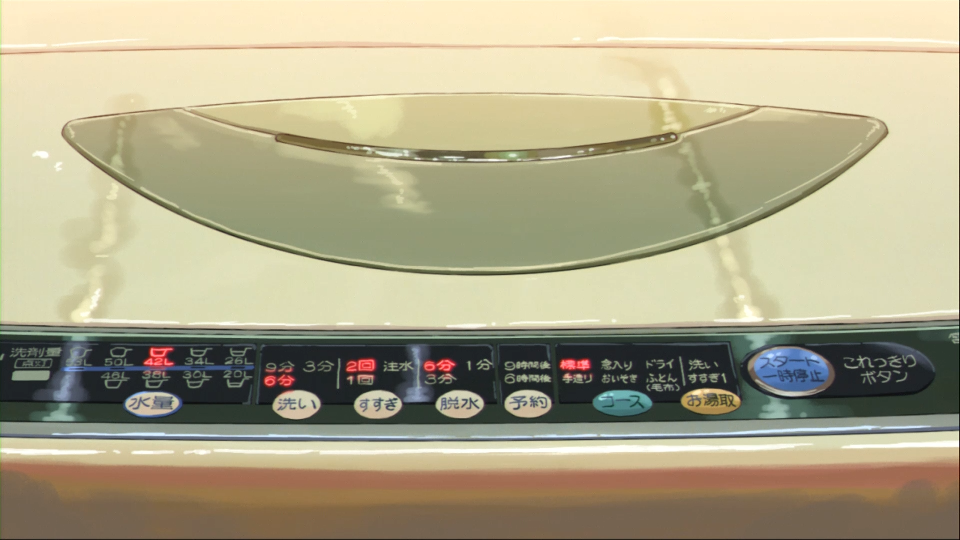
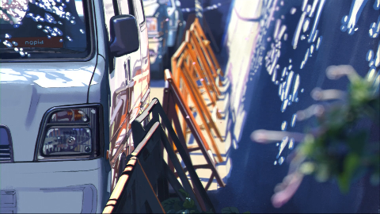
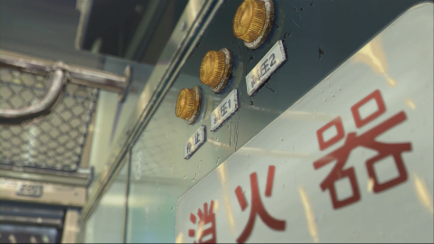
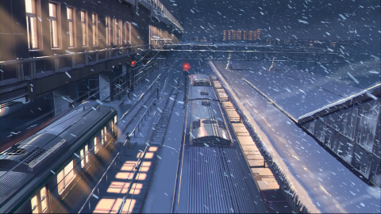

先日、秒速 5 センチメートルを見直してたら語りたくなったので語ります。（鉄の意志）
当方、映画漫画小説履修済みです。しかし小説は記憶があやふやなのでご勘弁を。
もちろんネタバレあります。
まずは映像美

僕はこれに心を奪われました。
洗濯機をこんなに美しく描ける人は他に知りません。
細かい書き込みはもちろんですが、光源の使い方が素晴らしい。
ただの洗濯機がこんなに存在感を放ち映画のワンカットを支配している事実は驚くべきことです。



美しい…
興味湧いたら d アニメでもアマプラにでも Go!
こっからネタバレありの文章メインです。
秒速 5 センチメートルで注目してほしいこと
それは副題です。
a chain of short stories about their distance
直訳で「かれらの距離についての短編集」ですかね。
ですので、秒速 5 センチメートルをみるときは「距離」を意識してほしい。
桜花抄では東京と栃木、栃木と鹿児島そして桜の落ちるスピード。
コスモナウトでは宇宙の果てと衛星の速度、澄田と貴樹の距離感。
秒速 5 センチメートルでは水野理沙とのメール、明里と貴樹の手紙。
これを抑えるだけで味が出てくる。無限に噛める。
ここからは考察・感想です。自己満足の世界に浸るので長くなります。
再度見たくなったら d アニメでもアマプラにでも Go!Go!
語り方
「来年も一緒に桜、みれるといいね」
ここの桜で一拍置くのが最高にいいんだ。
こういった細かい演技も n 回見てると気づき始める。いいよね。
そのあと桜花抄というタイトルアップと同時に桜花抄が流れ始めます。
わき道にそれますが、この BGM も本当に良き。
明里の優しい声色と良くマッチする穏やかな曲調。
秒速 5 センチメートルの BGM は天門が手掛けています。
彼の音楽なしでは、この作品はここまでの完成度を有しなかったと確信できる。
「ねえ、貴樹君私のこと覚えていますか？」
ここも良い。少し不安な明里が鮮明に思い浮かぶ。
というか明里の語り方は終始最高です。（拝啓の言い方とかスゲーいい）
距離
次は貴樹が鹿児島に引っ越します。
これにより、明里とは会うことは絶望的になるでしょう。
貴樹がその前に会う約束を明里とします。
明里は栃木の岩舟に住んでいるため、貴樹は東京から会いに行く。
ここで注目してほしい「距離」ができた。
栃木から東京という距離。
大人になった僕から見ると大したことはない距離だ。（実際一日もあれば行って帰ってこれるわけで）
ただ子供のころを思い出すと、一人で県をまたぐのはありえない話だった。
隣の市に行くのが関の山。（駅近がうらやましい）
子供視点では東京から栃木の距離は想像よりも壮大な距離感だったのだろう。
知らない路線、はじめてみる風景。
不安だらけだ。
公衆電話
つらいシーンです。
「わかった。もういいよ。もういい」
貴樹は本当はこんなこと言いたくなかったのでしょう。
しかし無力さから言ってしまう。少年の弱い心をうまく描いています。
「でも、どうしようもなかった」
その後の電車のシーンでもこのことを悔いています。
また、明里が公衆電話からかけているのも、つらさに拍車をかけています。
両親と揉めて家を飛び出して、貴樹にすがったのか。
いろいろ想像できますが、どれもつらいものです。
それを考えてしまうと・理解しているから貴樹は後悔しているのです。
雪の駅
約束の時間からかなり遅れてしまったため貴樹は暗い顔です。
しかし、待合室で明里を見つけます。
ここの顔すごい。
うれしさとか申し訳なさとかいろんな感情が出てきたんでしょうね。
「いままで食べたものの中で一番おいしい！」
本心。
おいしいに決まってる。
あと、駅員さん優しすぎ
Kiss
切ないシーンですね。
行為や映像を見てるだけなら、幸せあふれるシーンなのでしょうけど…
「明里のそのぬくもりを、その魂をどのように扱えば、どこにもっていけば良いのかわからなかった」
これがすべてです。
桜花抄、そして明里と貴樹のすべてがここに詰まっていると考えてます。
そのあとの別れ際から、この問題が彼・彼女の重しになっていることは明白です。
それだけに何とも言えない気持ちになります。
ほんとにいい作品
まだ語りたい
まだ足りない
まだまだまだ
あとから画像追加するかも